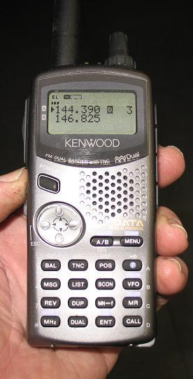
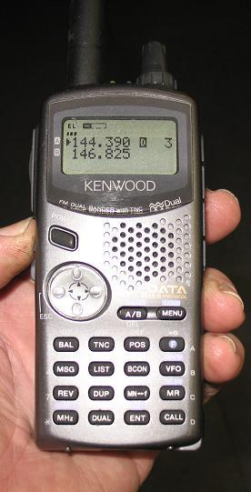

Text Message Event Data Reporting
Text Message Event Data Reporting
Text Message Event Data Reporting
Text Message Event Data Reporting
 

TEXT MESSAGING is an ideal Amateur Radio Application of great service to supported events and activities. The ability to report real-time data from the field from the TT-pad of any HT back for display at HQ offloads a lot of redundant and tedious voice chatter from the voice nets. This event application is just a subset of the overall Universal Amateur Radio Text Messaging Initiative.
APRS HT's (TH-D7 and VX-8R) are ideal for data entry at special events, and the D700 is ideal for convenient data display at the point of use. The photo above shows a D700 APRS radio control head attached to a clipboard for taking data from reporting stations... We use this system at scouting events where troops move from station to station while competing in skills competitions such as the Klondike Derby shown to the left. . Remember, APRS is much more than just vehicle tracking.
USING ANY DTMF HT FOR DATA ENTRY: Not only can the special APRS radios be used for this function, but any radio or microphone with a DTMF key pad can be used. Using a common DTMF decoding program at net control makes for easy transcription of the data as needed as shown below.
The first one is an A1 check-in report from station 9.
The second one is a score of 90 from station 04 for troop number 67.
The third one is a score of 90 from station 04 for troop number 567.
The fourth one is a score of 95 from station 12 for troop number 5344.
The last one is a message from station 12 saying he will BE BACK in 10 minutes.
Any other checkpoint that also needs to see this data can use their PC and laptop or can use one of these special DTMF paging display radios for display. Or if someone is running APRStt at the event, the DTMF data is converted to APRS and sent out to everyone on the APRS channel. Using DTMF Text Messaging allows anyone with any DTMF HT to send text or numeric data for display at HQ. This is a subset of the original APRStt DTMF gateway concept.
Although the power of this technique is mostly in the DTMF transmission of data from any radio, there were 300,000 DTMF send/receive-display HT's sold in the ham radio market that decode and display DTMF messages in a 6 byte window shown below. Please see the details on how to use these radios for TEXT Messaging in an amateur radio or APRS event.

EVENT SCORING APPLICATION: From each station at every time schedule, a troop number and score is reported by HAM radio back to headquarters. In the past this was all done by voice reports from up to 20 ham radio operators with HT's, all on one voice net. 20 stations, 8 time slots, 4 troops per station, that's 640 reports. . Voice reports or a few HT keypad strokes? Your choice...
In 2007, we fielded 5 Kenwood TH-D7 HTs and the one D700 so that some operators could directly enter their information on the keypad and have the data automatically transmitted as an APRS message to the Headquarters D700 where the information was available to the HQ staff at their convenience, and not in conflict with the demands for the voice net. . At the 2008 Klondike we fielded 10 of the D7's and by using D700's also for entry, could have covered 13 of the 17 stations with APRS data entry. . See 2008 Photos near the bottom of this page.
SUCCESS! The event was an unqualified success even though the net control and other personnel were unfamiliar with these radios. . All the Netcontrol had to do was read the scores like regular email on the front panel of the radio. That is, hit OK and then DELete for each new score. Two button pushes that anyone could do. . (Does not even need to be licensed to read messages).
The photos below give operators an idea of what the user sees on the front panel of the D7. The first photo includes the the D7's Keypad, the next photo shows the MSG Menu, and then the third photo shows the MSG entry screen. Each D7 was given a callsign of STN01, STN02, STN07, etc according to where they were stationed. . This way, the data coming in from station 7, showed as being from STN07. . All data was sent to NETCON.

To enter a score, the HT user presses the MSG key and then selects LIST from the MSG Menu above. This displays the last message. He can use this message as a template and press the MSG key again to edit the troop number and score as a new message. . Then he hits the OK button and the message is sent to HQ. When the score is ACKed by HQ, then the message shows the * on the MSG screen. For DTMF users, they simply send DTMF memory location #1 that has their header information and then press NNN*SS# to send the troop number NNN and score SS.
D700 CLIPBOARD DISPLAY: . When a score comes into HQ on the D700, the message instantly captures the radio front panel display for 10 seconds as shown below. . This screen shows incoming message number 1 from STN7 reporting troop number 874 with a score of 42. If the operator wants to read the message later he can press the MSG button and select up to 15 messages from the inbox as shown below right.
Each message in the list has an envelope icon that shows if the message has been read or not. Once the data is entered into the data program, then the HQ operator can delete that message.
Since these text messaging radios are all dual band, text messaging is done independently of voice traffic nets. In addition, the text messaging stations can also talk briefly on the data channel for back-door coordination as needed without bothering the primary voice channel. It is best to operate the text messaging on a different band than the main event channel to minimize QRM.
GOUGE SHEET: To help operators unfamiliar with the D7 HT, we have also prepared a gouge sheet to help those operators. It steps them through the process of entering a score. Get the ENTRY Gouge Sheet and the NETCON Gouge Sheet. . Also download station lat/longs for Kinder Farm Klondike Derby 2008.

OTHER APRS SUPPORT: Of course, all those D7 operators and NETCOM can also see the usual APRS displays and position information for knowledge about where where other operators are (although 121 miles shown is not typical of a local event!). . And please do not think that you need GPS for keeping track of these radios! . GPS's and their wires and cables are just a nuisance at most events. . Instead, just use a table of positions for stations, or a map with a grid on it, and the operators can easily place their position at any time. Even DTMF users can report their position by station number. See this map we used in 2008:

Just estimating a position to 10% within a grid shown above, and your position is reported to the nearest 60 feet! . Anyone should be able to do this. . Now if the other stations do have GPS connected, then their course and speed and altitude can also be observed on the D7 as shown to the right:
APRS MAP: Or anyone running APRS can see all this live on their map displays. . The display below is of an old APRSdos laptop being used for the event. The stations are shown with their Tactical Callsigns of CS4 or BS3, etc depending on their station number of whether they were Boy Scouts of CubScouts:
WORKS AS-IS! . Notice that this application requires no software, no setup, no special hardware, no GPS units, no Laptops, and no computers. . Participating operators simply bring along their APRS or DTMF radios and it is ready to go. It might appear that this is a lot of hardware to do a simple voice report, but when there are 20 people making reports on a single voice channel, it is much better to move this data to data channels. One for DTMF reports and one for APRS reports (or these can even share the same channel if there are no other APRS tracking going on. Operators in the field can send their traffic at their convenience, And HQ can offload the incoming message data at their convenience, and not at the crunch demands of the Voice net.
Statistically, we found that an APRS station could enter four separate scores
in about a minute (4 scores per event period) whereas a voice station could
report all 4 scores in about the same time including call-up and sign-offs.
But what is not obvious here, is that the voice method has a very high overhead:
Also, the non-data-savy operators at net control turned out to be positive about the experience, because it removed the stress of having to be responsive to voice traffic on call, whereas they could view the APRS scores at any time at their convenience. In fact, they could turn the D700 front panel over to a non-licensed volunteer to take the data. Thus conserving our voice operators for other tasks. Do NOT plan on using the same D700 for messages and other voice tasks, however, since the PTT interrrupts the message screen, and you cannot see the message screen while talking.
KLONDIKE DERBY 2008: The photos below show the overall map plan. The Boy Scout troops went around the red path and the Weblos Dens went around the Green trail. . Net control this year was in a warm house on the grounds just south of this picture.
WB4APR was stationed at Cub Scout station 4 with his Communications Trailer and 10 KW High-power Emergency Power System. . The van comes with a half dozen signs depending on the occasion. . In this case, the Naval Academy Radio Club callsign was on display. . The solar panels on the roof of the Prius provide about 200 Watts of solar power. . Only the bottom of the 55' push up mast is shown.
National Jamboree? . We can do this at the National Jamboree too. APRS/DTMF can be used to track the locations of all the troops, and also all the official vehicles and assets. APRS radios can communicate bulletins, announcements and scores and can be the universal communications system there. We can ask all troops to bring FRS radios and use those for data input, then APRS for assemillation and distribution and display. . Here are the Jamboree mapsof FT AP Hill in Virginia:
APRS TOUCHTONE or APRS-DTMF: This all boils down to what I wanted to do with APRStt back in the year 2000 when I introduced the APRS-TouchTone program. It let ANY DTMF HT be used as an APRS posit/message/data entry device just like the D7 HT. The only difference is that ANY HT sends the keystrokes using DTMF to the central APRStt program where it converts the key presses into the exact same messages that a D7 does itself. This turns any HT into a D7 for data and message entry. . but with the expense of only one DTMF-to-APRS laptop doing the work for the whole event.
Please See: . APRStt web page which describes this APRStt program and system.
VOICE RESPONSE: Since the DTMF user does not have the advanteage of the D7 HT's display to verify the correctness of his data, the APRStt main engine at net control speaks back the response for verification. This ANY-HT-TTpad data entry and ANY-HT-Voice-Response, was intended to turn APRS into a system that could be used at EVERY event, because anyone with any HT could participate.
SOUND CARD SOFTWARE NEEDED: . The problem is that I wrote APRStt in DOS and so it needed an external $5 DTMF chip hooked to the parallel port and an 8 resistor voice synthesizer. Although the parts count was under $10 total and hooked to the parallel port of any PC, such circuits implemented in DOS were dead ended. The whole purpose of my APRStt project was to inspire the new generation of APRS authors to implement the entire APRStt process in a Windows PC using nothing but a soundcard. The soundcard would decode the DTMF codes from the users and speak back the repsonses. A complete APRS system for ANY HT. But now, 7 years later, we are still waiting... for someone to be inspired to dupilcate the functionality of APRStt into Windows and sound cards...
In the meantime, you can download any DTMF decoding program and just display the raw numeric data and use that until someone writes the alphanumeric decoding as sent by these tens of thousands of text-paging radios.
Bob Bruninga, WB4APR